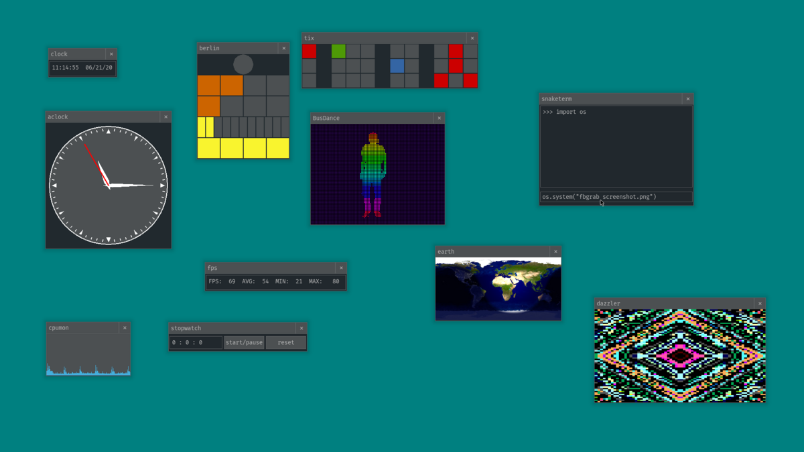

A Linux-based operating system with a pure Python userspace.

snakeware is an experimental OS with developed in 2020. Its userspace is written entirely in Python, barring a single Busybox root process. It was created by Joshua Moore drawing inspiration from the Commodore 64. The window manager, snakewm, is written primarily with pygame_gui. It is not based on X11 or Wayland, instead writing directly to the framebuffer (/dev/fb0).
On first boot, snakeware launches you directly a the Python interpreter. From here you can run Python commands directly, launch the window manager, or launch CLI games.
To launch snakewm from the interpreter, run the snakewm command. From snakewm the aopp menu can be opened using the Super key. From here a number of applications can be launched.
To launch CLI games, enter the following commands:
>>> import snake_games
>>> snake_games.menu()
Games included as of 2022 are snake, snakepaint, and circlez.
History
snakeware was a short-lived project and should be considered inactive, with most significant contributions ending in 2020. It was created and maintained by Joshua Moore and had a small number of contributors. Some of the applications included in snakeware never reached their intended goals, such as the included terminal emulator snaketerm which is extremely rudimentary.
One of the goals in making the entire userspace in Python was to make it modifiable by the user with little effort. As Python is intepreted, all code for the window manager and the interface would be visible and modifiable by any snakeware user, and would be easy to extend. Unfortunately, the planned text editor for snakeware, CATH, was never finished.
Other planned projects were networking, a chat application, and a package system built on top of PyPI called snakeoil.
The project was coordinated over a Discord server, though this hasn't been active for some time.
Links
snakeware source code : https://github.com/joshiemoore/snakeware CATH text editor : https://github.com/Cyppa/CATH-for-Snakeware